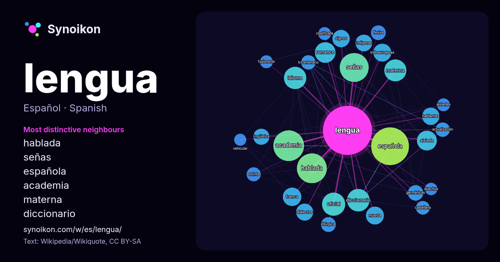

Español · palabra popular
lengua
“language” · Las palabras encontradas a su alrededor en 1895 apariciones de Wikipedia, Wikiquote.

Vecinos más característicos
- hablada 83×
- señas 80×
- española 49×
- academia 49×
- materna 44×
- diccionario 44×
- romance 37×
- aislada 36×
- franca 33×
- indoeuropeas 31×
- muerta 29×
- idioma 28×
- hablantes 27×
- dialectos 25×
- signos 24×
- germánicas 23×
- lingüística 23×
- flexiva 22×
- litúrgica 21×
- tricentenario 21×
× = cuántas veces más que en el texto general de Wikipedia.
Vecinos más frecuentes
- española 137
- academia 91
- hablada 86
- señas 81
- familia 74
- grupo 59
- oficial 52
- diccionario 49
- idioma 48
- materna 47
- romance 41
- aislada 38
- franca 33
- indoeuropeas 31
- muerta 31
- hablantes 29
- signos 29
- dialectos 28
- indígenas 27
- lingüística 25
En contexto
- Lengua puede hacer referencia a: Lengua (anatomía), órgano muscular móvil situado en el interior de la boca. Lengua (lingüística), sistema de comunicación Wikipedia snippets · Lengua
- Una lengua de señas o lengua de signos es una lengua natural de expresión y configuración gesto-espacial y percepción visual (o incluso táctil por ciertas Wikipedia snippets · Lengua de señas
- científicos, etc.). Algunas lenguas muertas continúan utilizándose en determinados ámbitos, como segunda lengua, lengua clásica o lengua litúrgica, aunque ya Wikipedia snippets · Lengua muerta
- tampoco se considera lengua construida la evolución histórica y, por lo tanto, no planeada conscientemente de cualquier lengua natural. Las motivaciones Wikipedia snippets · Lengua construida
- lengua aislada es aquella que no tiene un parentesco genealógico o genético con ninguna otra lengua viva o muerta, o cuya relación con otras lenguas no Wikipedia snippets · Lengua aislada
- de la Lengua Española (ASALE) es la entidad y el organismo institucional internacional encargada de reunir a las distintas academias de la lengua española Wikipedia snippets · Asociación de Academias de la Lengua Española
- La lengua materna —también denominada lengua nativa o lengua natal— es el idioma que aprende una persona generalmente en sus primeros años de vida y Wikipedia snippets · Lengua materna
- partir de cierto momento era una lengua aprendida como segunda lengua y no como lengua materna). Estas son las únicas lenguas de la familia itálica que sobrevivieron Wikipedia snippets · Lenguas romances
Más palabras
- agua
- arte
- bosque
- caballo
- camino
- campana
- canción
- ciencia
- ciudad
- clima
- comida
- corazón
- desierto
- dinero
- dios
- espejo
- estrella
- familia
- fuerza
- gato
- historia
- invierno
- isla
- jardín
- lluvia
- madre
- mapa
- miel
- montaña
- muerte
- naturaleza
- oro
- otoño
- pan
- perro
- puente
- reloj
- sal
- salud
- silencio
- sombra
- tiempo
- tormenta
- trabajo
- tren
- té
- verano
- verdad
- vida
Precalculado el 2026-10-09 con los ajustes predeterminados (±5 palabras, corpus mediano). El mapa interactivo puede actualizarlo con datos en vivo.
Interfaz traducida automáticamente; se agradecen correcciones.